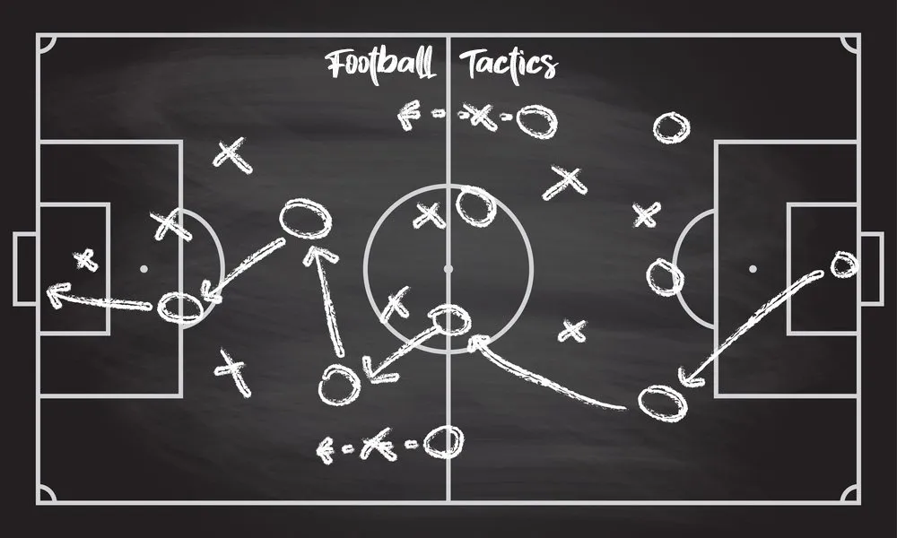

Football tracking

In recent years, the use of statistical analysis and data-driven decision-making has become increasingly prevalent among football teams and coaches. From tracking player performance and predicting outcomes to identifying areas for improvement and crafting game-winning strategies, statistics have become a crucial tool in the football world. The availability of detailed data on everything from player movements and passing accuracy to team formations and game outcomes has transformed the way football is played, managed, and viewed, making the sport more data-driven and analytical than ever before.
Detecting the different phases of the game
YOLO (You Only Look Once) is a state-of-the-art network for real-time object detection. It is trained and evaluated on the standardised COCO dataset, which is specially designed for this kind of task. It contains more than 80 object categories, including the category "person". YOLO is therefore particularly suited to our task of detecting players in the image, as its pre-trained versions are already capable of recognising players. Several versions of this network exist, the most recent available at the time of the course being version 4 (YOLOv4).
The Hungarian algorithm is a task assignment optimization algorithm. The problem it solves is the following: it must minimize the cost of assigning tasks to workers. This assignment problem is perfectly applicable to our task. Indeed, we have to assign each detection of frame n to the detections of frame n+1. It remains to find a metric that characterizes the matching quality between two detections. An assumption is made here in order to be able to perform this task: in a time interval of one second, a player should not have moved too far from his original position. Thus, two detections of the same player in two successive frames are much more likely to overlap, unlike detections of different players. I thus chose the IOU (Intersection Over Union) metric which calculates the intersection between two overlapping bounding boxes.
Once the algorithm was established, I was able to set up a loss metric between a theoretical half-time and a detected half-time. This loss is defined as the sum of the percentage error of detection of the beginning and the end of the half-time. The algorithm gave very good results allowing to detect the half-time to within 5 seconds in 90% of the cases.
Detection of ball shots
The use of Yolo is the very first step, it allows to obtain bounding boxes for the players and for the ball.
First, I studied the durations of the keystroke annotations, and I retained 3s as being a good duration to use to generate the video sequences, indeed it was necessary to fix a common duration to all the annotations to be able to use some neural models afterwards for the classification.
The first approach based only on Yolo did not give accurate enough results so I also used another method. This second approach is based on the detection of a succession of poses characteristic of the gesture of a typing. The Openpose model allows us to obtain points of articulation of people over time, the idea is then to build a classifier based on this succession of poses in order to detect whether there has been a hit or not. The advantages of this technique are numerous: Openpose is pre-trained to recognize people so there is no need to re-train the whole network for this task, it is much simpler to detect a person than a ball on a video given the difference in size and speed of the two and finally it is possible to obtain much more information than with the first approach, indeed it will be possible to identify the player at the origin of the strike and Openpose allows to distinguish right foot and left foot for example.
Conclusion
The objective of this project was to provide automatic annotations of soccer games. We saw that by using pre-trained neural networks (Yolo and OpenPose) we were able to both detect the different phases of the game and the hits. To go further we could imagine to have a precise annotation of the passes but this would require to have a tracking and a recognition of the players almost perfect which is not easy with low quality videos.